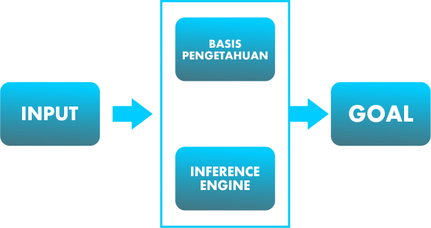

"Kecerdasan Buatan"
- Apa Arti Kecerdasan?
- Kecerdasan Merupakan kemampuan seseorang untuk memecahkan masalah yang
dihadapi, dalam hal ini adalah masalah yang menuntut kemampuan fikiran. Yang dipelajari dari
pengalaman dan menggunakan penalaran dalam menanggapi situasi yang baru.
- Konsep Artificial Intelligence ?
- Kecerdasan buatan (AI) memungkinkan mesin untuk belajar dari pengalaman, menyesuaikan input-input baru dan melaksanakan tugas seperti manusia. Sebagian besar contoh AI yang Anda dengar dewasa ini – mulai dari komputer yang bermain catur hingga mobil yang mengendarai sendiri – sangat mengandalkan pembelajaran mendalam dan pemrosesan bahasa alamiah. Dengan menggunakan teknologi ini, komputer dapat dilatih untuk menyelesaikan tugas-tugas tertentu dengan memproses sejumlah besar data dan mengenali pola dalam data.
- Mengapa Perlu Artificial Intelligence ?
- Pada dasarnya tujuan AI adalah untuk memberikan kemampuan untuk mengolah input
dan output pada perangkat lunak. Karena hampir semua permasalahan dipecahkan dengan
bantuan computer, karena pada dasarnya manusia ingin computer bertindak seperti manusia
karena itu akan mempermudah pekerjaan manusia.
- Arsitektur Artificial Intelligence

- Input => Goal ,terdiri dari Basis Pengetahuan dan Inference Engine
- Dimana Basis Pengetahuan atau dengan kata lain Knowledge Base merupakan fakta-fakta, teori, dan pemikiran terhubungnya satu komponen dengan komponen yang lainnya.
- Inference Engine dengan kata lain Motor Inferensi merupakan kemampuan menarik
- kesimpulan berdasarkan penglaman. Proses ini melalui mesin contohnya komputer dan robot.
- Contoh Penerapan Artificial Intelligence ?
- Chatbot
- Chatbot sering kita jumpai di fitur chat customer service dengan respons otomatis
yang ditampilkan. Kemampuan tersebut muncul berkat adanya teknologi AI. Dalam
bisnis, terlebih di era digital, chatbot punya banyak peran. Selain sebagai pusat layanan
dan informasi selama 24 jam setiap hari, teknologi tersebut secara tidak langsung
berpengaruh pada penjualan.
- Mobil Pintar
- Pada Awal Tahun 2020 kita dunia otomotif di gemparkan dengan munculnya mobil
pintar keluaran Tesla dimana advanced driver assistance systems (ADAS) yang
memungkinkan kendaraan mengemudi secara otomatis atau biasa disebut dengan istilah
autopilot. Lalu ,infotainment human-machine interface alias pendukung layanan digital,
speech recognition, gesture recognition, eye tracking, dan driver monitoring.
- Kamera Smartphone
- Hadirnya AI pada kamera smartphone dapat meningkatkan kemampuan lensa
dalam memotret maupun merekam, mendeteksi obyek dengan otomatis, dan
memaksimalkan sejumlah pengaturan sehingga hasil tangkapan terlihat berkualitas.
|